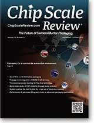

Current Issue
September • October 2015; Volume 19, Number 5
Cover Photo
Electronics packaging is constantly evolving to meet the demands for automotive, medical and consumer products that require improved performance. Automotive electronics are among the most demanding in harsh environments and must meet higher standards in order to ensure reliability and safety. Progressive packaging technologies from leaded to surface mount to MEMS, 3D, and die-level packaging will continue to place even more stringent demands on IC packages in these automotive applications. Working with an experienced OSAT can mean the difference between survival and failure in today’s competitive market.
Photo courtesy of Amkor Technology Inc.
Read the issue Download PDF SubscribeMiniaturization of electronics is continuing to increase power densities at all packaging levels. Miniaturization arises from cost reduction, being the key driver in many industry sectors, resulting in increasingly tighter design margins and less tolerance of over-design. This is particularly true in the physical design of the product, where over-design results in additional weight, volume, and in some cases manufacturing and assembly costs, increasing the cost of the final product. ...>> Ad by Mentor Graphics
Tech Briefs
by Debra Vogler, Senior Technical Editor
Submit Technology News

A*STAR IME Consortium issues update on advanced packaging solutions
Chai Tai Chong, Principal Research Engineer, A*STAR’s Institute of Microelectronics (IME)
A*STAR’s Institute of Microelectronics (IME) and 11 of its 12th EPRC Consortium partners across the semiconductor supply chain have developed solutions in integrated circuit (IC) packaging. Members of the consortium include Ajinomoto, EV Group, GLOBALFOUNDRIES, Heraeus Materials, Henkel, Infineon Technologies, JSR Micro N.V., Linxens, and Tokyo Ohka Kogyo. The consortium announced in August that it had achieved its objectives of developing solutions to overcome the reliability and performance issues and technical challenges in packaging solutions for ...>>

Nordson EFD introduces a piezoelectric jetting technology
Bryan Teece, Senior Mechanical Engineer, Nordson EFD
Nordson EFD has introduced a piezoelectric jetting technology called PICO® Pµlse™ valve and PICO Toµch™T controller. According to the company, this technology enables the dispensing of very exact, repeatable micro-deposits as small as 0.5nL at up to 500Hz continuous, with 1500Hz maximum bursts. The new product’s non-contact jet valve's modular design makes it possible to jet low- to high-viscosity fluids onto any surface, including uneven and tough-to-reach substrates. ...>>

Imec and SPTS collaborate on processes for 3D IC wafer stacking
Eric Beyne, Fellow and Program Director for 3D System Integration, imecEric Beyne, Fellow and Program Director for 3D System Integration, imec Imec and SPTS Technologies recently announced that they are jointly developing a highly accurate, short cycle-time dry silicon removal and low-temperature passivation solution for through-silicon via-middle processing and thinning of the top wafer in wafer-to-wafer bonding. The collaboration is addressing the need for an industrially viable 3D-IC technology, i,.e., one in which the via reveal process has a shorter cycle-time etching process. One of the challenges noted by imec is related to accumulating non-uniformities coming from the TSV frontside etching, bonding and grinding processes; variations of a few microns may occur in residual silicon thickness above the via tips. ...>>

EVG targeting vacuum encapsulation/bonding needed for next-gen MEMS
Dr. Thomas Uhrmann, Director of Business Development, EV Group
EV Group is targeting vacuum encapsulation and bonding processes needed for next-generation MEMS to meet the growing demand for devices that service applications for the Internet of Things (IoT) and wearable sensors. Vacuum sealing of MEMS devices is driven by three primary issues: 1) Reducing power consumption caused by parasitic drag on resonators (e.g., gyroscope applications); 2) Reducing convection heat transfer (e.g., microbolometers, temperature-controlled devices; and 3) Preventing corrosion or other types of interaction with O2 or H2O (e.g., parts with exposed Al or AlN). ...>>
Industry Spotlight
Submit Industry SpotlightSiliconware Precision Industries Co., Ltd. and Hon Hai Precision Industry Co., Ltd. entered into a Letter of Intent whereby the parties will form a strategic alliance through the exchange of shares.
Taichung, Taiwan - August 28, 2015 - Hon Hai Precision Industry Co., Ltd. (TaiwanStock Exchange:2317.TT) (“Hon Hai”) and Siliconware Precision Industries Co., Ltd. (“SPIL” or the “Company”) (Taiwan Stock Exchange: 2325.TT, NASDAQ:SPIL) signed a Letter of Intent today, whereby the parties will form a strategic alliance through the exchange of shares in accordance with Article 156.8 of the Company Act. The alliance will provide customers with the best integrated service program through future collaboration on technology and business. ...>>Rudolph Technologies NSX 330 Series Widely Adopted for Advanced Packaging Inspection and Metrology
Flanders, New Jersey -September 1, 2015 - Rudolph Technologies, Inc. (NYSE: RTEC) today announced the widespread adoption and success of its newest macro defect inspection tool, the NSX® 330 Series. The NSX 330 Series provides high-speed macro defect inspection and 2D and 3D metrology for advanced packaging applications, which are being developed to support the mobility and the growing Internet of Things (IoT) markets. ...>>Imec and SPTS Technologies, an Orbotech Company, Collaborate on Critical Processes for 3D IC Wafer Stacking
San Francisco – July 14, 2015 – Nano-electronics research center imec and SPTS Technologies, an Orbotech Company (NASDAQ: ORBK) company and supplier of advanced wafer processing solutions for the global semiconductor and related industries, announced at SEMICON West their collaboration on critical processes for 3D IC wafer stacking. They are jointly developing a highly accurate, short cycle-time dry silicon removal and low temperature passivation solution for through-silicon via-middle processing and thinning of the top-wafer in wafer-to-wafer bonding ...>>Industry Events
Los Altos, CA - July 7, 2015 - The Burn-in and Test Strategy (BiTS) Workshop will hold its first-ever international event in Shanghai on October 21, 2015. Over the course of its sixteen-year history, BiTS has established itself as the preeminent event for test and burn-in consumables, test cell integration, and test operations. BiTS Shanghai will highlight what is Now & Next in the test and burn-in of semiconductors. ...>>
Research Triangle Park, NC - August 7, 2015 - The 12th annual 3D Architectures for Semiconductor Integration and Packaging Conference, or 3D ASIP as it has come to be known, will be held December 15-17, 2015, at the Sofitel San Francisco Bay Hotel in Redwood City, California. It is the longest running conference on 2.5 / 3DIC focused on commercialization and infrastructure. ...>>